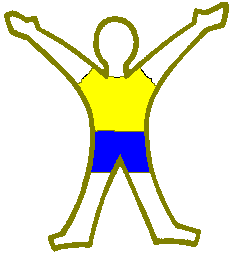
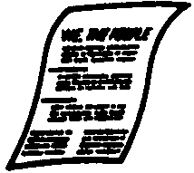
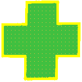
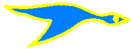

Let's Vote!
Review the following and decide which Activity Badges you would like to work on as a Webelos. Write your name to the left of at least 4. Indicate your top 4 if you vote for more than 4! (Everyone needs to earn the Badges with "All" in the place your name goes, so don't vote for them.)
Fitness means being healthy and in good physical and mental shape. One of your jobs in life is taking care of your wonderful and complex body.
That means you must have a healthy diet and plenty of exercise and rest. You must avoid harmful substances.

In the Cub Scout Promise, you say you will do your duty to your country. This means being a good citizen. There are many ways to be a good citizen, not only of your country but in your community and your state, in your neighborhood and school. And think about this: What does it mean to be a good citizen of the planet Earth?

In emergencies, someone has to be ready to help. After you earn the Readyman activity badge, you'll know how to react quickly when someone is ill or injured.
You'll be ready to call for emergency help. When you learn first aid, you can care for a sick or injured person until help arrives.
You'll also find out how to prevent accidents and how to be safe.

When you earn the Outdoorsman activity badge, you'll learn about building campfires, cooking, setting up tents, making outdoor beds, tying knots, and many other skills.